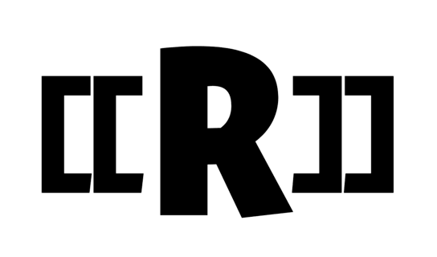

This is required a lot.
This is required.
[Exposed=Window]
interface Foo {
attribute DOMString bar;
undefined doTheFoo();
};

Le Foo interface represents a {{Foo}}.
The doTheFoo() method does the foo. Call it by running {{Foo/doTheFoo()}}.
This is required for specifications that contain normative material. EH OH!!!